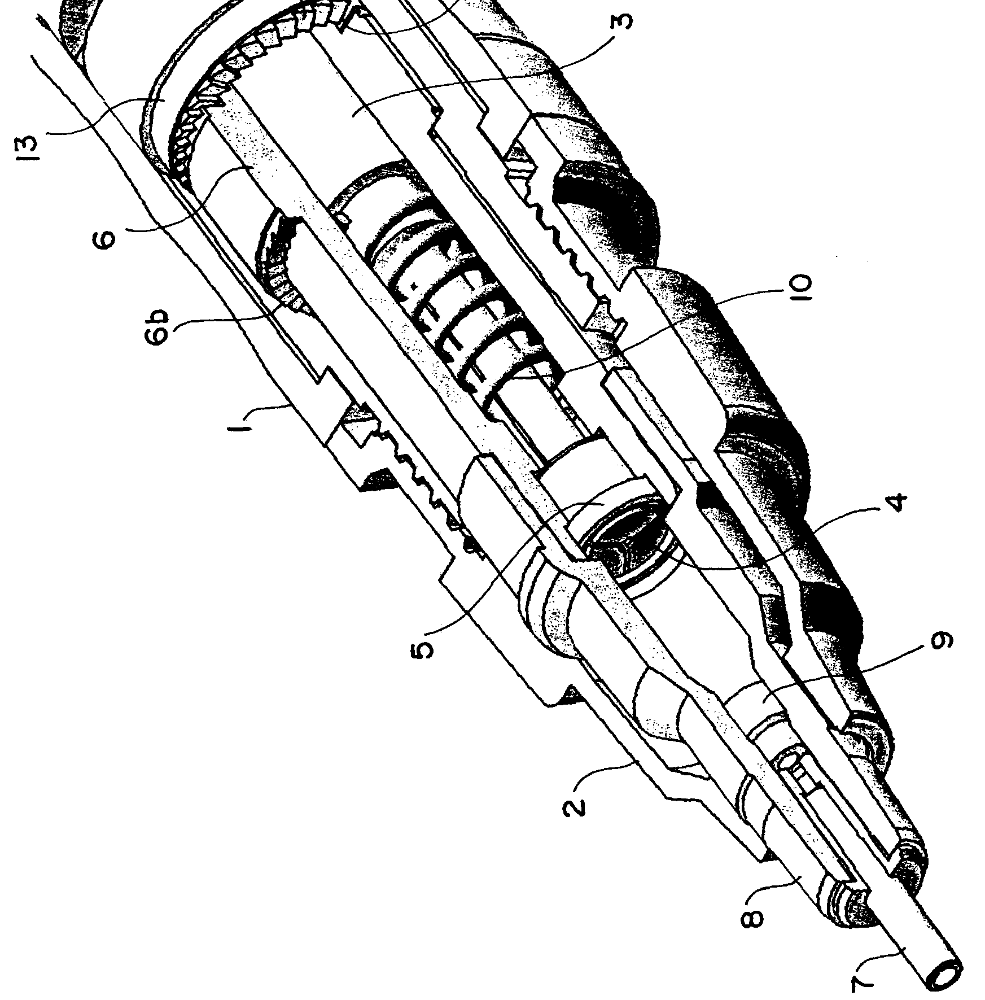

Physical nature inspires through both its capabilities and limitations, suggesting the possibility of mastery while simultaneously ensuring a difficult realization. The following are a few philosophies which drive my pursuits.
When I was nine years old, I owned a kick scooter. I didn't ride it that often, but one day I was feeling particularly bold after scooting around the entire neighborhood. Our driveway at the time was a 15 degree incline, the type where the back end of your car would inevitably scrape if you tried to drive up straight on. Anyway, as I'm sure you can tell where this story is going, the short of it is that I decided to ride down the driveway, failed to jump the gutter at the bottom, flipped into the air, and broke my right tibia and fibula as I landed. Cue six weeks in a wheelchair followed by quality time with my best friends Left Crutch and Right Crutch.
I don't ride scooters anymore, but that trauma left me with a deep appreciation for my body's ability to recover from everything I put it through. As I got older and travelled the world, I realized how lucky I was to only spend six weeks in a wheelchair. People with physical disabilities in the developing world are not even treated as people; many are systematically barred from obtaining an education. Regardless of your opinion on handicap accessibility in America, most other countries have it much, much worse.
These experiences have shaped my opinion on what I find important. Ideas reach the other side of the world in seconds, yet it's physical existence that simultaneously bottlenecks and gives meaning to almost everything we do. Whether it's through wearable sensors, embedded devices, or external prostheses, I seek ways to dismiss human shortcomings: those that we're born with and those that are imposed. How can we become faster, stronger, more informed, less distracted when confronted with "hard" limits? More importantly, I hope whatever answers there are increase our appreciation of the things we find beautiful.
Courtesy aussiegall under Creative Commons 2.0
Change is a powerful tool which leads to control if it can be willfully manipulated. Essentially, there's a guarantee that once a system is fully-characterized, the knowledge of how to change it also becomes clear. For instance, a musician knows exactly how to interact with an instrument to produce the desired sounds. Mass production relies on this principle to efficiently manufacture large quantities of goods, bringing them to you for just three easy payments of a low, low price. This relationship is fascinating.
One potential application of this idea manifests in 3D design. Taking a basic cube, plenty of different software packages can texturize it. Applying an image over all six sides can make it look like brick or sand, but the underlying framework remains a cube which the artist must manually deform, though generative methodologies exist which make this manual process much easier.
An alternative approach is to build up a semantic database of transformations which can be intelligently applied to any base model. It can start out by defining basic transformations such as "fuzzy" and "rough", building up to more abstract ones like "futuristic" and "strong". These transformations will rely on the fact that any model can be characterized by its edges, vertices, thicknesses, geons, etc. Similar to how a neural net operates, small tranformations can be applied to these features in the first layer, leading to more complex ones which affect the model on a deeper level. If I want to "werewolf" a car, that should be possible with only a little effort. It would be interesting to see the effects of training this network on both desireable and undesireable results after the initial hand-tuning phase. I see this approach of transmogrification as complementative to iterative computational design due to its more deterministic nature, giving even the layman powerful tools to quickly achieve results.
Many of the objects we're familiar with follow traditional design paradigms because they work. Not only do they work, but they tend to work well due to iterative improvements. Because of this stagnation, it can be easy to dismiss new ideas which tackle old problems. After all, why spend extra effort to find the global optimum when a local one is good enough?
I argue that "good enough" is an easy way out. If we really knew how deep the rabbit hole went, our current tools would seem downright primitive. Smoke signals vs. the Internet.
For example, a standard computer mouse is universally familiar, but its use is limited to generally flat surfaces. Trackpads offer greater mobility, but are confined by their fixed area. Is there a way of simultaneously maintaining the familiarity and accuracy of using a mouse while increasing device mobility and versatility?
In a deconstructed mouse, the user's hand could substitute for bulky structural components. Mount a contact switch to the pads of the index, middle, and ring fingers. On the thumb, attach a CMOS sensor with light source. All wires run along the fingers to a chipset on the back of the wrist, where there would also be a battery and bluetooth transmitter. Using the device would be intuitive. Imagine simply dragging the side of your thumb around on your pants and tapping your finger pads to click.
Alternatively, consider the tedious task of soldering. Even when using a helping hand to hold your components, alignment can be tricky, and no matter how you finagle things, you need at least two fingers to manipulate the solder.
I think there's an easy way to get that finger count down to one. Mechanical pencils use a clamping chuck in conjunction with a retainer to hold the graphite in place, so all we need to do is use the same mechanism while replacing the lead with solder wire and ta-da! Controlled wire feed. Strapping the device to the index finger should permit accurate application of solder while the other four digits of the same hand manipulate the piece.
Admittedly, even though these simple projects aren't revolutionary, they're still large evolutionary steps. They make an effort to drive toward an ideal. Will we really interface with computers in the next 100 years the same way we've been doing for the last 30? Will a cup still be a cup in 500 years? Even if nothing changes, I will make sure that it won't be due to a lack of exploration.
Images courtesy endian under Creative Commons 2.0
Izawa, Hirotake, Takeshi Kobayashi, and Kyo Nakayama. Mechanical Pencil. Patent EP20080868522. 20 Oct. 2010.